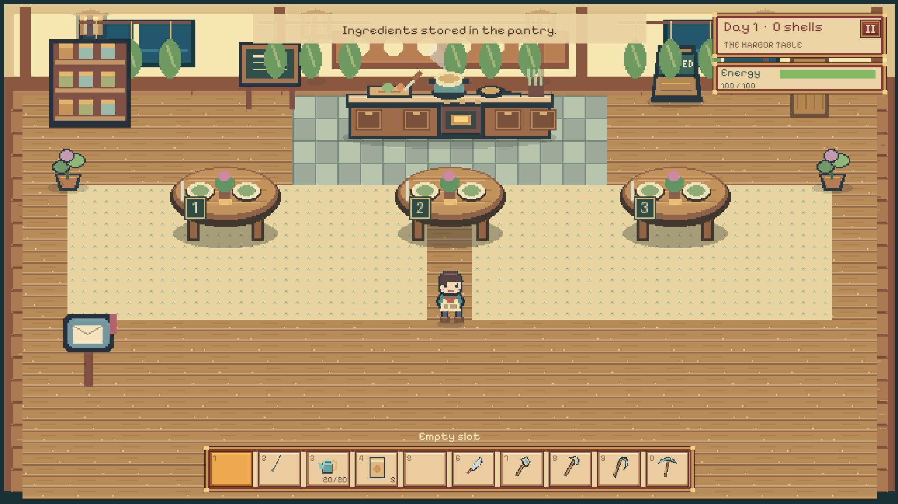

Wildfeast: Isles of Wonder
Exploration + restaurant game · In development
Explore a strange food world, bring ingredients home, and run a small restaurant.
- My work
- A personal game in development
- Built with
- Windows / Offline / Single-player
- A loop connecting exploration, gathering, cooking and serving.
- Playable fishing, farming, cooking and restaurant service.
- Art, maps and creatures remain in development.
